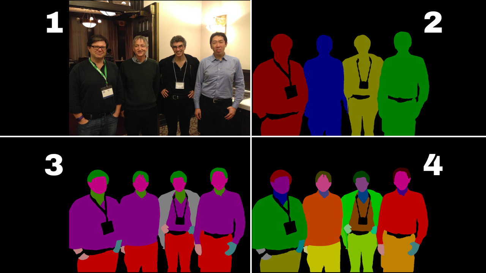

Hi, my name is
I build
Data scientist and ML engineer. At HCLTech I shipped a Gen AI copilot that cut mean resolution time 76% (105→25 min) and improved backend throughput 26% across 4,000+ knowledge docs. Currently pursuing an MS in Data Science at the University of Arizona.
I'm a data scientist and ML engineer with two years of industry experience shipping production AI systems. At HCLTech I built Gen AI copilots and Python/C++/TypeScript validation pipelines across 4,000+ enterprise knowledge documents; earlier at Carrier and PwC I shipped ML-driven tooling and graph data pipelines that measurably cut cost and turnaround.
I'm now pursuing an MS in Data Science at the University of Arizona (2025–2027), after a B.Tech in Computer Science from Shiv Nadar University. I care about turning messy data into scalable, measurable decision-making systems.
Generative AI Development Team
Sales Performance Tooling
Stable camera-to-database latency in pilot runs
Biometric attendance and site-monitoring system: processes field imagery with OpenCV for layout-aware recognition and persists results in PostgreSQL for repeatable comparison testing.

84.7% mIoU on LIP — 2.3% above the published SCHP baseline
Trained and evaluated a PyTorch human-parsing model, engineering input/label pipelines and running what-if scenarios under label noise across specialized evaluation tasks.
Detects machine-paraphrased text from rephrasing tools
Plagiarism tool that flags AI-rephrased passages by combining OCR extraction with the ChatGPT API and a paraphrase-detection pipeline.
Peer-reviewed paper (co-authored) presented at the 35th International Conference on Database and Expert Systems Applications, published in the Springer LNCS series.